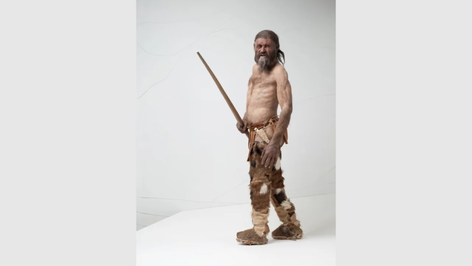

¿Quién fue el primer hombre en tatuarse?
- Ötzi, el Hombre de hielo, la momia más antigua de nuestros antepasados europeos, que vivió durante la Edad de Cobre
- El ser humano lleva tatuándose al menos 5200 años

¿Cómo iniciaron los tatuajes?
- Los tatuajes han tenido uso simbólico desde culturas antiguas en diferentes partes del mundo.
- La historia del tatuaje se remonta hasta la prehistoria.
- En la antigüedad se creía que el hecho de grabarse la figura de un animal evitaba recibir su ataque. Por ejemplo, la figura de un escorpión evitaba la picadura.
- Los usaban los grupos prehispánicos aztecas, mayas y amazónicos, los cuales acostumbraban también perforarse y hacerse incrustaciones; además, en oriente los maorís y otros grupos de las islas del Pacífico